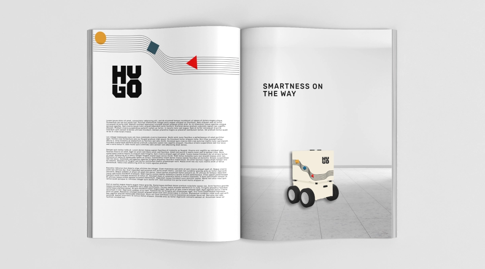
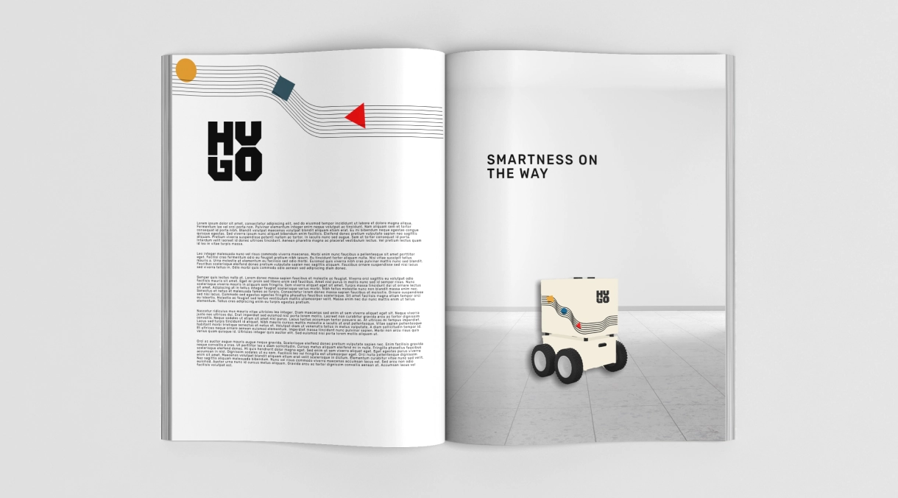

Hugo Tech is a delivery robot that streamlines the final stretch of deliveries, from goods to groceries. To reflect its vision of future technology, the company wanted to update its branding with a more futuristic and innovative feel.
Hugo Tech is a company that develops modular delivery robots with a focus on autonomous solutions for last-mile deliveries. They sought a rebrand to strengthen their brand identity and better reflect their unique qualities: safety, adaptability, sustainability, and reduced CO2 emissions. Hugo Tech is inspired by Nordic design and the Bauhaus ideology, valuing simplicity and functionality. The company targets cities and industries and wanted their rebrand to align with these values and their target audience.
Hugo Tech provided a briefing that gave an overview of the company, including their mission, vision, key competitors, and the brands they draw inspiration from. With this information as a foundation, I began creating a brand inspiration board, which became an essential reference tool throughout the project. This board helped me consistently draw inspiration and ensured that I worked in line with the company’s core values and aesthetic.
I developed a mood board specifically for the project, focusing on designing Hugo Tech’s delivery robots and giving them a strong brand identity. The mood board became the foundation for the entire creative process, guiding the development of the logo, color palette, and the overall design of the robots, ensuring that the final result reflected Hugo Tech’s identity and vision.


 
